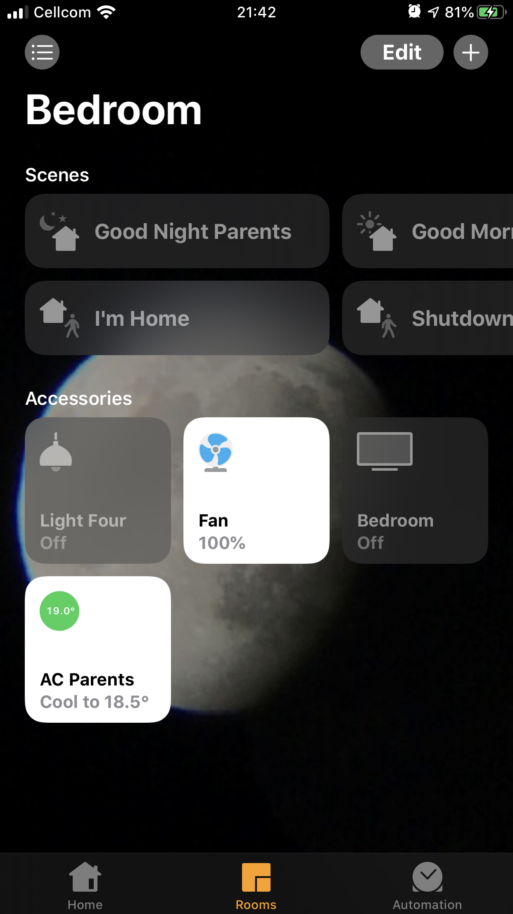

Welcome to SmartHomeDIY
This project is a DIY LOW Power and a LOW Radiation REST API Home Automation Framework.
With this system you will be able to control your home lights, Air conditioning, TV, water heater any many more devices (IR, wall sockets, and light switches are only a few). The system is Arduino and Raspberry Pi based. You will be able to control your house from the internal WiFi network as well as from the Internet. For internet access you will have to use a DNS service such as no-ip
You can have multiple Arduino stations controlling anything at you home. Control is done via your iPhone, iPad or Desktop using the web interface or the Apple HomeKit app. Basically this project is a REST API to arduino station. RaspberryPI runs a node server which talks via serial to a BT device (serial BT) This BT device sends the info to a gateway which propagate the command to an RF24 station according to the request address in the command messages have this format: "XXX:YYY" Where XXX is the address of the station and the YYY is the command the station need to execute.
The Reason I use RF24 is to lower the radiation to minimum as WiFi always radiate even if there are no commands. while RF24 can listen to command without being "connected" as in WiFi. making the network less radiating and with lower power characteristics.
Other Home automation systems
Why This system
- Hardware and software open source.
- Simple communication protocol.
- Ability the spread the system at your home with in multiple ways to get good Wireless communications range.
- Simple control from any device (browser) with mobile support.
- Easy API for external apps to activate commands such as IFTTT
Installing the framework @ your home
Installing this framework will require knowledge with Basic electronics, soldering.
Installing the light switch control stations will require in experience with High voltage 220V/120V circuits.
If you do not know how to handle High Voltage, please do not!.
But the good news you can still use The IR stations to control AC, TV and such.
The Arduino stations should be flashed with the attached custom Bootloader to enable remote upload of sketches from your development computer via RF24 (instead of tearing the wall apart each time) also know as OTA (Over the Air update). (WORK IN PROGRESS)
Controlling you home is done via your phone browser or any other browser throw a wep application or the apple HomeKit App utilized red node to configure your HomeKit devices. The web application is hosted on a Raspberry Pi station, running nodejs. nodejs 'talks' to a serial bluetooth attached to the Raspberry Pi GPIOs the Serial Bluetooth sends the data to an arduino station gateway which dispatches the messages to the relevant Arduino endPoint station using RF24 module. each endpoint station has a unique address and a set of command it knows to handle.
This Project is managed with trello
The code is managed and developed using Visual Studio Code Multi-root Workspaces and platform.io This combination allows to develop the server side (and sync updates using ssh extension called sftp) and the arduino station, including the bootloader code, compilation and flashing, all in one place. It also offers tasks to compile and flash the bootloader and even a predefined theme. platform.io also allowed my to have a common networking code for all Arduino stations in one common directory which all Arduino projects (stations) can reference, keeping the protocol updates and changes easy and safe.
If you are a developer and would like to contribute to the code Checkout the documentation here
if you are a user wishing to use the platform at your own hose Checkout the documentation here
